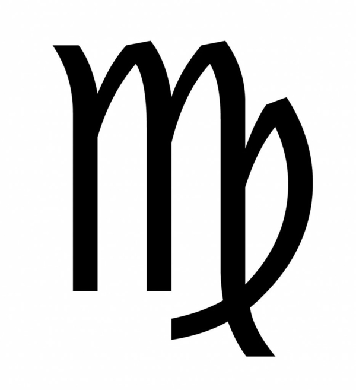

Horoskopi - DELFI
 Līdz Tava DELFI plus abonementa beigām ir dienas ! Turpmāk pagarini abonementu automātiski, izmantojot norēķinu karti. Pagarināt abonementu
Today
Date
T, 17. martsName day
Ģertrūde, GerdaWeather Now
1°Services Navigation
Horoskopi Valūta TV programma Laika ziņas ReklāmaQuick About Us Navigation
Action Navigation
Abonē PieslēgtiesDELFI
Quick Site Sections Navigation
DELFI Delfi PLUS Ziņas Bizness Sports Auto Kultūra Izklaide Viņa Cālis Tasty Tūrisma gids Campus KinolenteWeather Now
1°Language Switcher
RUS PieslēgtiesSite Navigation
DELFI Abonēt DELFI plus Meklēt Pieslēgties Iesūti ziņu Reklāma RUSZiņas
Latvijā Ārzemes Bizness Aculiecinieks Sports Auto Kultūra Izklaide Podkāsti Delfi TV Laika apstākļi DELFI plus Spried ar Delfi MVP Atmaskots RUSE-žurnāli
Kinolente Campus Finhack Viņa Tasty Cālis Tava Māja Tavs Dārzs Tūrismagids Mans Draugs OrākulsDažādi
TV programma Horoskopi Atverskapi Tēmas Multimediālie darbi Biļešu Paradīze Mēness kalendārs DELFI TiešraidesPar DELFI
Par mums Reklāma DELFI Brand Studio DELFI konts Kontakti Abonēšana Atsauksmes NoteikumiSeko DELFI
RSS
MOBILĀS APLIKĀCIJAS
Lasi DELFI ziņas savā e-pastā
facebook.com/Delfi.lv twitter.com/delfilv draugiem.lv/delfi instagram.com/delfi.lv/ RSS Android iOS HuaweiLasi DELFI ziņas savā e-pastā
Site Search
Section Navigation
Horoskopi Raksti Mēness kalendārs Tests × Jūsu profils jau pieslēgts sistēmai!Horoskopi Trešdiena, 17. marts
Auns 21. marts– 20. aprīlis Vērsis 21. aprīlis– 20. maijs Dvīņi 21. maijs– 20. jūnijs Vēzis 21. jūnijs– 20. jūlijs Lauva 21. jūlijs– 21. augusts Jaunava 22. augusts– 22. septembris Svari 23. septembris– 22. oktobris Skorpions 23. oktobris– 22. novembris Strēlnieks 23. novembris– 20. decembris Mežāzis 21. decembris– 19. janvāris Ūdensvīrs 20. janvāris– 18. februāris Zivis 19. februāris– 20. martsMēness kalendārs
Trešdiena, 17. marts 0 1 2 3 4 5 6 7 8 9 10 11 12 13 14 15 16 17 18 19 20 21 22 23 4. Mēness diena līdz 08:06 (neitrāla) 5. Mēness diena (neitrāla) Augošs Mēness vērsī Augošs Mēness vērsī (zemes stihija) Saule zivīs lec 06:34, riet 18:31 lec 06:34, riet 18:31 Ģertrūdes diena VairākLaika ziņas
1°Rīga Zemākā Augstākā 0° 2° 4.7 m/s 0 mm 1°
Rīga 3°
Saldus 1°
Valmiera 3°
Ventspils 1°
Alūksne 2°
Bauska 5°
Daugavpils 4°
Liepāja 3°
Madona 3°
Rēzekne 2°
Jelgava 1°
Jūrmala Skatīt vairāk
Komerciāls saturs
Ko darīt un no kā izvairīties: padomi efektīva reklāmraksta izveidei
Ko darīt un no kā izvairīties: padomi efektīva reklāmraksta izveidei
Ko darīt un no kā izvairīties: padomi efektīva reklāmraksta izveidei
Site Footer
Footer About Us Navigation
Reklāma Par mums Kontakti Noteikumi AtsauksmesOther Languages Navigation
rus.delfi.lv delfi.ee rus.delfi.ee delfi.lt ru.delfi.ltContact Details
AS DELFI Dēļu ielā 4-8, C ieeja, 3. stāvs, Rīga, LV-1004 +371 67784050 redakcija@delfi.lv Abonēšana +371 25744202 konts@delfi.lvCopyright Disclaimer
Copyright © 2021 AS DELFI. All rights reserved.Maksājumu datu atjaunošana DELFI satura abonēšanai
Labdien!
DELFI veic servisa un drošības uzlabojumus. Lai padarītu tavus maksājumus ērtākus un drošākus, lūdzu, atjauno savus maksājuma datus šeit, DELFI mājaslapā*. Pateicībā par sadarbību dāvinām tev turpmāko 8 nedēļu abonementu par 1 eiro
*Gadījumā, ja neatjaunosi datus līdz 4. martam, abonements turpinās darboties līdz apmaksātā perioda beigām, bet nākamais automātiskais maksājums var neizdoties. Ja tā noticis, lūdzu, iegādājies abonementu no jauna.
Atjaunot DELFI plus datus Atjaunot MVP datus Loading... ×Lai dzēstu DELFI kontu Tev ir jāpārtrauc "DELFI plus" abonēšana. To vari izdarīt konta sadaļā "DELFI plus" abonēšana
Labi × Ziņa nosūtīta! Kļūda! Nav iespējams nosūtīt! Mēģini vēlāk! Loading... Paldies, ka atbalsti kvalitatīvu žurnālistiku! Tavs abonements jau ir aktīvs. × Atvainojiet!
Radusies tehniska kļūme.
Apmaksa izvēlētajā veidā pašlaik nav pieejama. Mēģiniet, lūdzu, vēlāk! Atvainojamies par sagādātajām neērtībām!
Atvainojiet!
Radusies tehniska kļūme.
Apmaksa izvēlētajā veidā pašlaik nav pieejama. Mēģiniet, lūdzu, vēlāk! Atvainojamies par sagādātajām neērtībām!
× Pastāsti arī citiem! Facebook Twitter Link Informējam, ka DELFI portālā tiek izmantotas sīkdatnes (angļu val. "cookies"). Turpinot lietot šo portālu, Jūs piekrītat, ka mēs uzkrāsim un izmantosim sīkdatnes Jūsu ierīcē. Uzzināt vairāk Pieņemt un turpināt Add to home screen